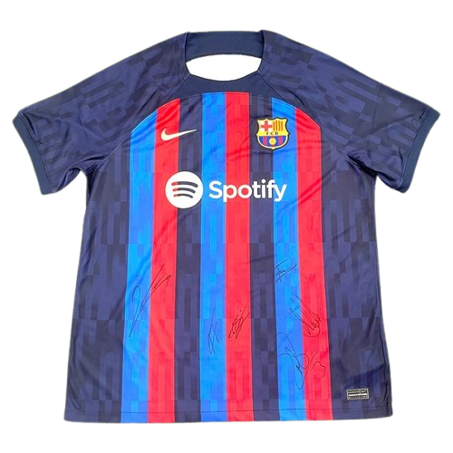
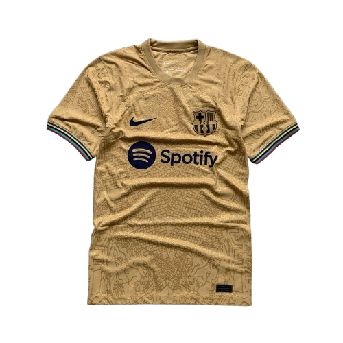
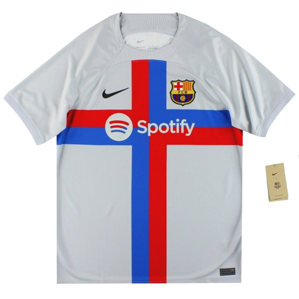
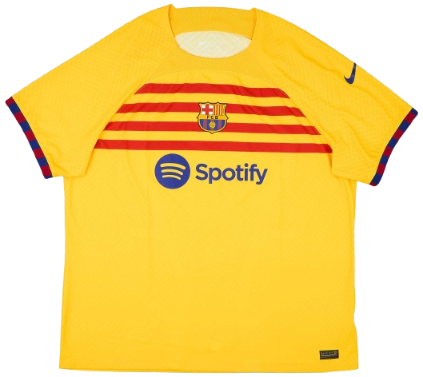

Home Kit

A modern home kit with bold blaugrana striping and the first Spotify sponsor, marking a new chapter for the club.
The 2022/23 season marked a major resurgence for FC Barcelona after several difficult transitional years. Under manager Xavi Hernández, the club rebuilt its identity with a mix of experienced signings and emerging young talent. Barcelona strengthened the squad by signing players such as Robert Lewandowski, Raphinha, and Jules Koundé, while academy stars like Pedri, Gavi, and Alejandro Balde continued to emerge as key contributors. Barcelona dominated domestically, winning the La Liga title for the first time since 2019 with one of the strongest defensive records in the club’s history, conceding very few goals thanks to defenders like Ronald Araújo and goalkeeper Marc-André ter Stegen. The club also won the Supercopa de España, defeating Real Madrid 3–1 in the final. However, despite their domestic success, Barcelona struggled in Europe, finishing third in their UEFA Champions League group and later being eliminated from the UEFA Europa League knockout round by Manchester United. Overall, the season represented a turning point as Barcelona reestablished itself as the dominant force in Spanish football while continuing its long-term rebuild.

A modern home kit with bold blaugrana striping and the first Spotify sponsor, marking a new chapter for the club.

A bright gold away kit with map-inspired texture, blending bold color with a premium and celebratory look.

A vibrant yellow third kit with red horizontal striping, drawing from Catalan color influence in a fresh way.

A clean white fourth kit with a bold red-and-blue cross design, creating one of the season’s most unique looks.